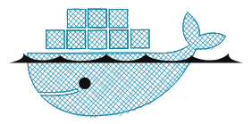
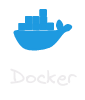
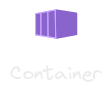
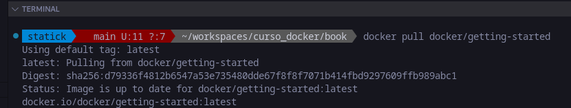
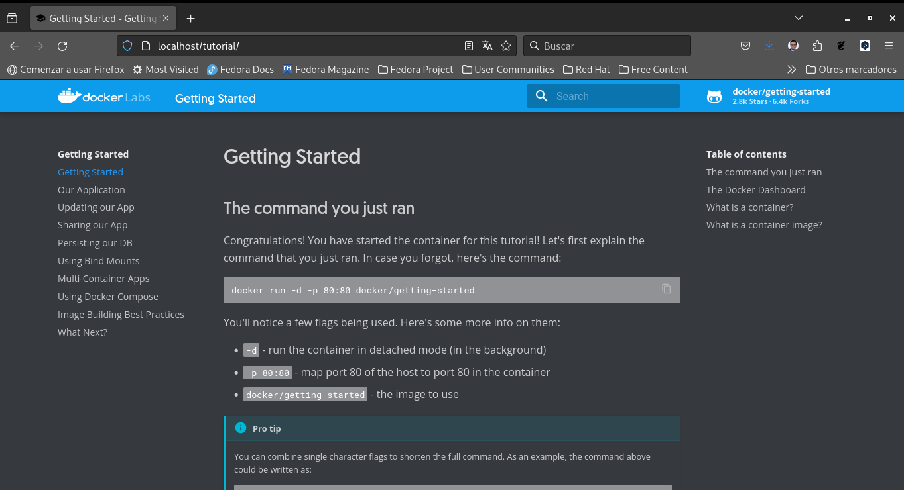

Docker

Docker es una plataforma que permite desarrollar, enviar y ejecutar aplicaciones en contenedores. Un contenedor es una instancia ejecutable de una imagen, que es una especie de plantilla que contiene todo lo necesario para ejecutar una aplicación.
Haciendo una analogía con los contenedores de transporte, una imagen sería el contenedor en sí, y el contenedor sería la carga que se transporta.

Una imagen Docker es una plantilla inmutable que contiene un conjunto de instrucciones para crear un contenedor Docker. Las imágenes son portátiles y pueden ser compartidas, almacenadas y actualizadas.
Las imágenes Docker son inmutables, lo que significa que no se pueden modificar una vez creadas. Si se realizan cambios en una imagen, se debe crear una nueva versión de la imagen.

Un contenedor Docker es una instancia ejecutable de una imagen Docker. Se ejecuta de manera aislada y contiene todo lo necesario para ejecutar la aplicación, incluyendo el código, las dependencias, el entorno de ejecución, las bibliotecas y los archivos de configuración.
Un contenedor aisla la aplicación de su entorno, lo que garantiza que la aplicación se ejecute de manera consistente en diferentes entornos.
Ejemplos:
Descargar una imagen:
docker pull docker/getting-started
Este comando descarga la imagen getting-started desde el registro público de Docker.
Correr un contenedor en el puerto 80:
docker run -d -p 80:80 docker/getting-started
Este comando ejecuta un contenedor desenlazado en segundo plano (-d) y mapea el puerto 80 de la máquina host al puerto 80 del contenedor (-p 80:80).
Descargar una imagen desde un registro.
El comando -p se utiliza para mapear los puertos de la máquina host al contenedor, muchas personas consideran que significa “puerto”. Sin embargo en realidad significa “publicar” o “publicar puerto”.
Comandos básicos de Docker:
Descargar una imagen desde un registro.
docker pull <IMAGE_NAME:TAG>Listar las imágenes descargadas.
docker imagesListar contenedores en ejecución.
docker psListar todos los contenedores, incluyendo los detenidos.
docker ps -aEjecutar un contenedor a partir de una imagen.
docker run -d -p <HOST_PORT>:<CONTAINER_PORT> <IMAGE_NAME:TAG>Detener un contenedor en ejecución.
docker stop <CONTAINER_ID>Iniciar un contenedor detenio.
docker start <CONTAINER_ID>Eliminar un contenedor.
docker rm <CONTAINER_ID>Eliminar una imagen.
docker rmi <IMAGE_NAME:TAG>Atajos y Comandos Adicionales:
Ejecutar comandos dentro de un contenedor en ejecución.
docker exec -it <CONTAINER_ID> /bin/bashObtener detalles sobre un contenedor o imagen.
docker inspect <CONTAINER_ID or IMAGE_NAME:TAG>Ver los logs de un contenedor.
docker logs <CONTAINER_ID>Utilizar Docker Compose para gestionar aplicaciones multi-contenedor.
docker-compose up -dPráctica:
- Descarga la imagen de Nginx desde el registro público.
- Crea y ejecuta un contenedor de Nginx en el puerto 8080.
- Detén y elimina el contenedor creado
- Utiliza los comandos para detener y eliminar un contenedor.
Resolución de la Actividad Práctica
- Abre tu terminal o línea de comandos.
- Descarga la imagen de Nginx desde el registro público de Docker:
docker pull nginx- Crea y ejecuta un contenedor de Nginx en el puerto 8080:
docker run -d -p 8080:80 nginxElige un puerto en tu máquina local (por ejemplo, 8080) para mapearlo al puerto 80 del contenedor.
- Verifica que el contenedor esté en ejecución:
docker ps- Si el contenedor está en ejecución, detenlo utilizando el siguiente comando:
docker stop <CONTAINER_ID>Reemplaza
- Elimina el contenedor detenido:
docker rm <CONTAINER_ID>Reemplaza
Combina los comandos docker ps, docker stop, y docker rm para gestionar contenedores eficientemente.
¡Practica estos pasos para familiarizarte con el ciclo de vida de los contenedores Docker!
¿Qué Aprendimos?
- Aprendimos a descargar imágenes, correr contenedores y gestionarlos básicamente.
- Entendimos la importancia de las banderas en los comandos Docker.
- Practicamos la creación y gestión de contenedores Docker.